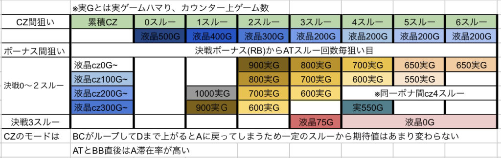
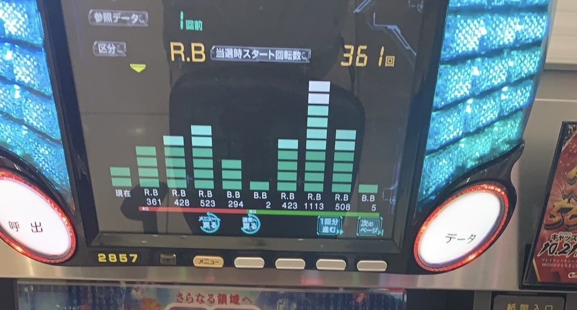
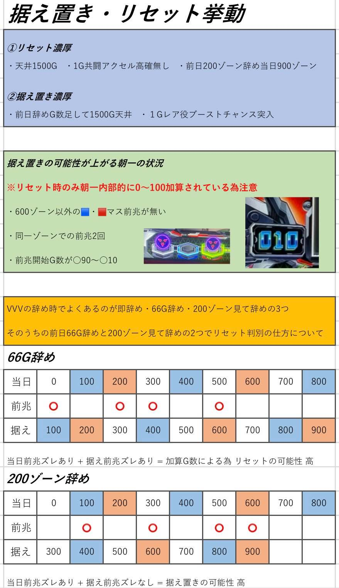

L革命機ヴァルヴレイヴ


狙い目
早見表

本機の狙い目は、
CZ間天井狙い、ボーナス間天井狙い、決戦ボーナススルー狙いになります。
CZ間天井狙いがメインになり、そこにボーナス間、決戦ボーナススルー回数を考慮して、狙い目を決めます。
また、CZをスルーするほど内部モードがアップしていくため、スルーするほど浅いゲーム数からCZ間天井狙いが出来ます。
また、CZスルー回数は、決戦ボーナスでリセットされないため、決戦ボーナスが続いている台はCZスルーを重ねてる(累積スルー)可能性が高いです。
更に、ミミズモードという、終日初当たりが軽く、連チャンしないというモードが存在します。
ミミズ定義については、下記の様な挙動です。
この場合は、狙い目が変わります。
※ミミズ定義
420以内91% 革命ボーナス当選率80%
基本800枚以内
店データでCZ履歴確認出来るなら、
CZ当選率90%以上
※累積スルーについて
累積とは革命ボーナスor革命ラッシュ間からの累積スルー回数、途中で決戦ボーナス(レグ)挟んでも有効
累積数える時の起点が
前回 at終了or BB終了
スルーを数える時の起点が
前回 rb.bb.atのいずれかの終了時点
以下、狙い目
[ミミズ以外CZ間天井狙い]
累積スルー回数を基準
液晶ゲーム数で
0スル 500
1スル 400
2スル 300
3スル 以降200
※スルーを重ねるとモードが上がる仕様のため、前回CZ間がハマっている場合はボーダー上げた方が良さそう。
[ミミズCZ間天井狙い]
累積スルー回数を基準
液晶ゲーム数で
0スル220-
1スル 85-
2スル 0-
決戦1スルcz70-
決戦2スル不問
※CZがデータ機に反映されない店ではミミズ判定が難しいため、400のゾーン当選またはCZ中の1枚役での突破を目視で確認した台が望ましい。
[ボーナス間天井狙い]
※荒れるためボーダー高めに設定
店舗データ機で
液晶0の場合
決戦0スル〜2スルー 900-
決戦3スル以降 液晶75から
※累計4スルーは0Gから
※液晶G数でボーダー調整可能
[高モード狙い］
やめ時
at後液晶上部モヤモヤ消えるまで(70Gくらい)
ビッグ、レギュラー後は即やめ
ミミズはat後即やめ
その他
データの見方

タイプ1
cz、rb、at表記のデータカウンター
cz表記は 共闘Vチャレンジ(cz)
RB表記は 決戦ボーナス(RB)
AT表記は 革命ボーナス(BB) or [超]革命ラッシュ…AT表記が2回以上連チャンしたら革命ラッシュ突入が濃厚

タイプ2
RBとBB表記しかないデータカウンター
RB表記は 決戦ボーナス(RB)
BB表記は 革命ボーナス(BB) or [超]革命ラッシュ(AT) …AT表記が2回以上連チャンしたら革命ラッシュ突入が濃厚
こちらのタイプは共闘Vチャレンジ(cz)が表記されません。
czスルー狙いする時は推測するしかない要注意
据置リセット挙動

参考元